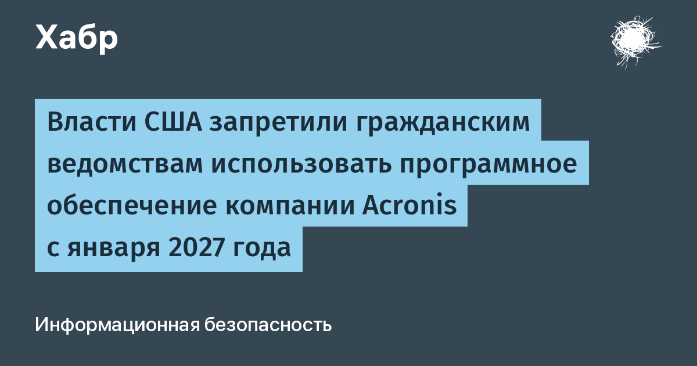

30 октября 2026 года в Федеральном реестре США опубликовано уведомление Министерства внутренней безопасности: Acronis AG и все аффилированные структуры исключаются из закупок гражданского блока федеральной власти, а уже поставленные продукты компании («covered articles») ведомства обязаны удалить из своих информационных систем в течение 180 календарных дней — то есть до 27 января 2027 года (документ 91 FR 68528). Приказ подписан ещё 31 июля 2026 года, но именно сейчас стал формально обязательным для всех гражданских агентств. Ранее продукты Acronis уже лишились Пентагон, Управление по борьбе с наркотиками и другие структуры сисового блока.
Формальный механизм — закон FASCSA (Federal Acquisition Supply Chain Security Act) 2018 года: впервые по нему запрещён конкретный вендор. Основание — подозрения разведки, что риски цепочки поставок не устранены: компания основана в России, а следователи Минобороны США проверяли, привлекались ли российские инженеры к кодовой базе продуктов. Компания защищается: в 2022 году Acronis закрыла бизнес в РФ и релоцировала команду, в мае 2025-го шведский фонд EQT купил контрольный пакет (по сообщениям СМИ — за 3,5 млрд долларов), основатель Сергей Белоусов сменил имя на Серж Белл, штаб-квартира в Швейцарии, юрисдикция — Сингапур. В Acronis подчёркивают: более 75% акций принадлежит западным инвесторам, а приказ DHS касается только федеральных ведомств США и обычных клиентов не затрагивает. Оспорят ли приказ — компания не сообщила.
Показательно, что в сентябре 2026 года CISA внесла в каталог реально эксплуатируемых уязвимостей (KEV) дефект Acronis Backup (CVE-2026-87886) с некорректными правами по умолчанию. Это не названо прямой причиной приказа, но на фоне расследований любой активный эксплойт бэкап-софта — подарка для регулятора.
Сюжет напрямую про Россию, хоть и решается в Вашингтоне: Acronis — компания с российскими корнями, чья 20-летняя история началась с дисковых утилит в Новосибирске и Химках. Формально «отвязаться» от российского происхождения не помогли ни уход из РФ, ни смена имени основателя, ни продажа контрольного пакета шведскому фонду — для американских властей оказалось решающим то, чего они не смогли проверить: кто реально имел доступ к кодовой базе.
Речь только о федеральных ведомствах США — коммерческим клиентам в других странах запрет DHS напрямую не грозит. Но повод для ревизии серьёзный: если у вас в стеке стоит Acronis (Cyber Protect, Backup и т.п.), разумно проверить, не проходят ли ваши данные через те же компоненты, где нашли CVE-2026-87886, закрыть лишние права по умолчанию и держать план миграции на альтернативу — прецедент принудительного изгнания вендора из госсектора показывает, что геополитический риск теперь живой фактор выбора бэкап-платформы.